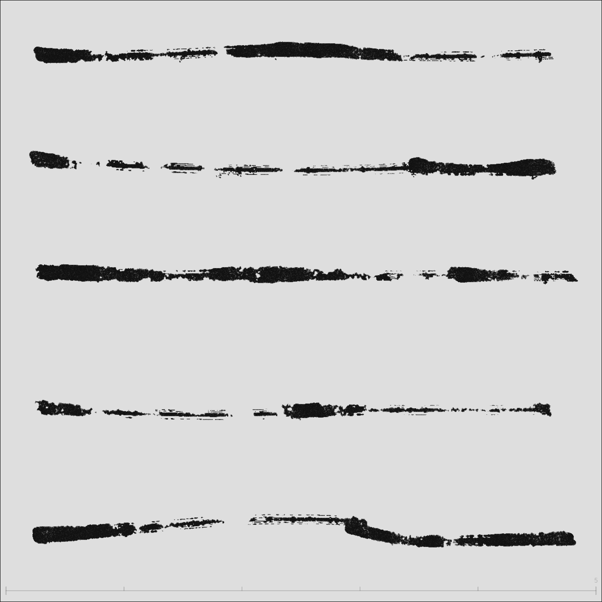
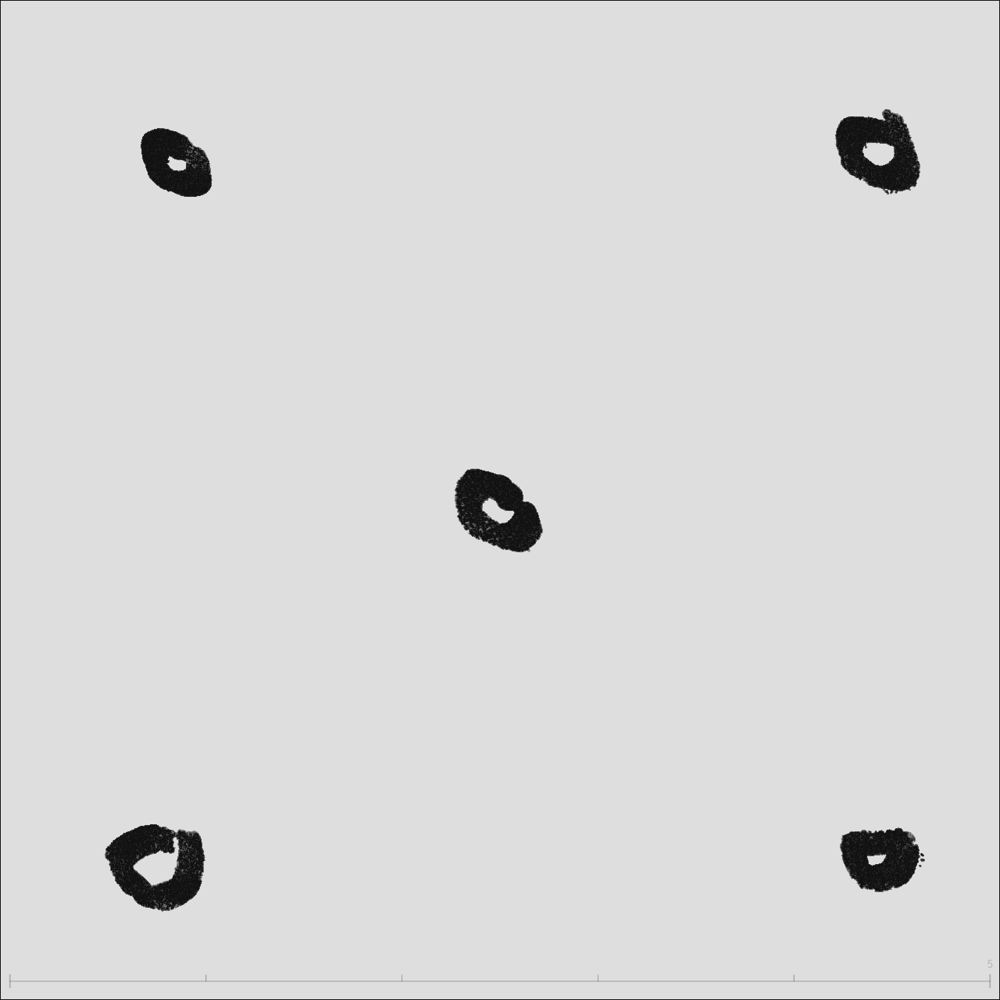

What do brush dynamics carry?
In InkField's brush physics model, each stroke's dynamic data (speed, acceleration, thickness variation) can be recorded and analyzed. This chapter explores how to read emotion and intention from this data.
Experiment 1: Hesitation Detection — Who drew more hesitantly?
Two recordings each contain 4 vertical strokes. Using only JSON data (timestamps + coordinates), can we determine which artist was more hesitant?
| Recording A (Hesitant) | Recording B (Decisive) | |||||
|---|---|---|---|---|---|---|
| Stroke | Start | Middle | End | Start | Middle | End |
| 1 | 0.76 | 1.81 | 0.19 | 2.62 | 1.39 | 0.48 |
| 2 | 1.28 | 1.32 | 0.25 | 0.66 | 1.32 | 0.54 |
| 3 | 1.30 | 1.10 | 1.73 | 1.09 | 1.43 | 0.32 |
| 4 | 1.26 | 0.81 | 0.54 | 1.41 | 0.86 | 0.28 |
1. Slow start speed. A's first stroke begins at only 0.76 px/ms, while B's first stroke starts at 2.62 — a 3.4× difference. A hesitant person lacks commitment at the moment of contact, needing to "warm up" before accelerating.
2. More curved path (sinuosity 1.084 vs 1.050). Higher sinuosity means the stroke deviates more from a straight line. A's artist continuously micro-adjusted direction during movement — characteristic of uncertain path planning. B's Strokes 2 and 4 have sinuosity of only 1.03, nearly straight lines.
3. Direction choice as a clue. B has two strokes drawn bottom-to-top — this counter-intuitive direction choice actually signals confidence. The artist clearly knew where they were going, not relying on gravitational habit. All four of A's strokes go top-to-bottom, the most conservative choice.
Experiment 2: Acceleration Analysis — A story within one stroke
A single stroke lasting 6 seconds, from an ink blob in the upper-left to a flick toward the lower-right. Through speed and acceleration, we reconstruct the artist's intention.
| Phase | Time | Duration | Speed | Behavior |
|---|---|---|---|---|
| 1. Initial Circle | 0 – 0.9s | 0.9s | 0.06 – 0.15 | Slow movement near the starting point, drawing the upper arc of the ink blob. The wrist rotates the brush in small arcs. |
| 2. First Burst | 0.9 – 1.2s | 0.3s | Peak 0.96 | Sudden acceleration sweeping through the arc — rapid pass over the lower half of the blob. Acceleration reaches 0.012 px/ms². |
| 3. Long Pause | 1.2 – 2.0s | 0.8s | ≈ 0 | Nearly complete stillness for 400ms. This is the decision point — the artist is deciding where to go next. |
| 4. Stop-and-Go | 2.0 – 5.4s | 3.4s | 0 – 0.9 alternating | 5 pauses + 8 bursts alternating. Repeatedly looping in the upper-left area, forming dense ink traces. Takes 56% of total time. |
| 5. Final Flick | 5.4 – 6.0s | 0.6s | Peak 14.1 | Decisive flick toward the lower-right, speed is 40× the slow zone. The stroke thins due to high velocity. |
The ink blob in the upper-left isn't "random scribbling" — it's 3.4 seconds of stop-and-go, the artist thinking through composition with their body. Each brief burst (0.5-0.9 px/ms) is an exploratory probe; each pause is a reassessment.
The critical turning point comes at 5.4 seconds: the artist suddenly makes a decision, flicking toward the lower-right at a peak speed of 14.1 px/ms. This isn't hesitation — it's release after buildup. The first 90% of the time was spent accumulating energy for the final 10% of decisiveness.
Methodology: Reading Painting Intention from JSON
| Metric | Calculation | Meaning |
|---|---|---|
| Instantaneous Speed | Distance between adjacent points ÷ time difference | The artist's decisiveness at that moment |
| Acceleration | Adjacent speed difference ÷ time difference | Rate of intention change — sudden acceleration = decision made |
| Sinuosity | Total path length ÷ straight-line distance | = 1.0 means perfectly straight; higher = more meandering |
| Direction Reversal | Count of adjacent vector dot products < 0 | Hesitation or deliberate direction changes |
| Speed Profile | Average speed of stroke split into three segments | Slow start = hesitation, slow end = control |
| Slow Zones | Intervals where speed < 0.1 for > 200ms | Location and frequency of thinking pauses |
The same person in different psychological states produces entirely different speed distributions. When hesitant: slow starts, curved paths. When confident: fast starts, straight paths. And within a single stroke, speed "discontinuities" (sudden shifts from slow to fast) often mark a decision moment — the critical point where thinking switches to action.
Experiment 3: Five Emotions in One Gesture
Added 2026-03-11 — Data from recording drawing-recording-2026-03-11T03-49-49.json
One person, identical brush settings (bm=1, us=0, bs=2, pr=0), five horizontal strokes. The parameters are exactly the same — all differences come from the hand's speed and pauses. Same gesture, five emotions.

Speed Heatmap
Red = fast, Yellow = medium, Green/Blue = slow, Black dot = stroke start (same visualization as Ch2 & Ch3)
Speed Timeline
X-axis = time progression (all five strokes + gaps), Yellow bands = pause zones
▁ near-stop ▂ very slow ▃ slow ▄ medium ▅ fast ▆ very fast █ burst — each block = 10% of stroke progress
| Stroke | Speed Fingerprint | Duration | Pauses | Speed Variance | Slow Ratio |
|---|---|---|---|---|---|
| S0 | ▄▆▁▂▂▂▁▄▅▁ | 2.8s | 2 | 0.27 | 73% |
| S1 | █▆▃▁▁▂▂▁▁▁ | 2.1s | 1 | 0.90 | 70% |
| S2 | ▃▁▅▁▂▁▅▁▂▃ | 4.2s | 7 | 0.14 | 69% |
| S3 | ▆▁▁▂▁▁▁▅▄▁ | 3.0s | 2 | 0.42 | 78% |
| S4 | ▃█▂▁▁▁▄▆▂▁ | 2.3s | 1 | 7.27 | 64% |
Stroke-by-Stroke Reading
Starts at medium speed (0.42), accelerates to 2.7 px/ms in the first 20%, then drops sharply — 201ms pause at the 50% mark. Re-bursts at 70-80% (+0.75 acceleration). Speed profile: start=0.42 → mid=0.07 → end=0.27.
The flying white in the middle isn't caused by speed flinging the ink — it's caused by the pause. Emotional arc: rush out → stop to evaluate → decide to continue.
The strongest opening (1.01), bursting to 6.6 px/ms at 7-8% with +2.59 acceleration — the most powerful start of all five. Then rapid decay: the last 60% is nearly still, ending with a 400ms pause. Speed profile: start=1.01 → mid=0.06 → end=0.02.
The dense ink pool on the left isn't from pressing hard and lingering — it's inertial accumulation after the speed burst. The first 20% consumed all the kinetic energy. Variance of 0.90 reflects extreme unevenness. Like mustering the courage to say the first sentence, then having nothing left.
Longest of the five (4.2 seconds), most pauses (7), yet lowest variance (0.14). Speed oscillates like a wave: ▃▁▅▁▂▁▅▁▂▃ — push, stop, push, stop. Pauses distributed at 6%, 39%, 45%, 77%, 80%, 100%, almost evenly covering the entire stroke.
It looks "complete" because the pauses are evenly distributed and brief. This isn't the hesitation of fear but the rhythm of tai chi push hands — push, breathe, push, breathe. The flattest emotion, but not "no emotion" — it's the most controlled emotion.
Starts fast (bursting to 5.4), but at 47% stops for 850ms, at 54% stops again for 1017ms — over a second of total stillness. Slow ratio 78%, highest of all five. Then re-bursts at 76% (+0.59) before tapering off.
The fragmented appearance isn't from light pressure — it's two long pauses shattering continuity. The first 850ms is hesitation; the second 1017ms is remaking a decision. Completely different from S2's 7 evenly distributed short pauses — same "stopping," but scattered stops are rhythm while concentrated stops are struggle.
Variance 7.27 — 54 times that of S2. At 13-17% there's an extreme burst of 30.5 px/ms, acceleration +30.24 — other strokes peak at +2.59. A 683ms pause at 57%, then re-engagement at 62%. Speed profile: start=1.12 → mid=0.18 → end=0.24.
A dumbbell structure: heavy on both ends, light in the middle. The whip-crack at 17% is release after buildup (similar to Ch3's "final whip-out"), the stillness at 57% is another decision point. This stroke has the most complete four-act narrative: build, release, still, release again.
New Metrics: Speed Variance & Pause Distribution
| Metric | Calculation | Meaning |
|---|---|---|
| Speed Variance | Dispersion of point-to-point speeds from the mean | Emotional tension — low=steady, high=dramatic |
| Pause Distribution | How pauses are spread across the stroke's progress | Evenly distributed=rhythm, concentrated mid-stroke=decision hesitation |
| Speed Fingerprint | 10-segment speed level sequence | Visual pattern for at-a-glance emotion type recognition |
S2 paused 7 times → rhythm. S3 paused 2 times → hesitation. The difference isn't "how many times" but how pauses are distributed. Evenly scattered pauses feel like breathing; concentrated mid-stroke pauses feel like struggle. Looking at pause count alone (Ch4's "Slow Zones" metric) would misjudge — S2's 7 pauses seem more hesitant than S3's 2, but S2 is actually the most controlled stroke of the five.
These five strokes share identical brush parameters (bm=1, us=0, bs=2, pr=0), nearly parallel paths (sinuosity 1.038-1.044), eliminating composition and effects as variables. All differences come from hand dynamics — speed, pauses, acceleration. This is the cleanest experimental design for studying brush emotion: fix everything, let only emotion flow.
Compositional Intuition — Boundaries, Symmetry & Stroke Order
Previous chapters focused on "what emotion does a single stroke carry." But before the first stroke, the artist is already doing something more fundamental: deciding where to draw.
The experiment: on an 800×800 canvas, tap once each at top-left, bottom-left, bottom-right, top-right, and center. Five dots, no composition rules, pure intuition.

Stroke order: top-left → bottom-left → bottom-right → top-right → center
6.1 Boundary Distance Map
Each dot's distance to the four canvas edges reveals the precision of the artist's spatial "feel."
| Stroke | Centroid | Left | Right | Top | Bottom | Nearest Edge |
|---|---|---|---|---|---|---|
| S0 Top-L | (141, 127) | 141 | 659 | 127 | 673 | Top 127px |
| S1 Bot-L | (127, 689) | 127 | 673 | 689 | 111 | Bot 111px |
| S2 Bot-R | (705, 690) | 705 | 95 | 690 | 110 | Right 95px |
| S3 Top-R | (704, 119) | 704 | 96 | 119 | 681 | Right 96px |
| S4 Center | (401, 408) | 401 | 399 | 408 | 392 | Bot 392px |
The two left dots sit 127–141px from the left edge, while the two right dots sit only 95–96px from the right edge. The ~35px gap is a signature of right-handedness: the dominant hand reaches more easily to the right, naturally leaving less margin there.
6.2 Stroke Order Path
The connection order of five dots forms a distinctive path: counterclockwise U-shape + diagonal convergence.
The first four strokes trace a complete counterclockwise U (top-left → bottom-left → bottom-right → top-right), establishing a rectangular boundary. The fifth stroke cuts diagonally from the top-right corner to center — a 136° slash, like a final "confirmation" of where the center lives. This isn't calculated; it's body memory.
6.3 Composition Paradigm Comparison
Overlaying the five dots on rule-of-thirds and golden ratio grids:
| Stroke | Nearest Thirds Point | Nearest Golden Point | Verdict |
|---|---|---|---|
| S0 Top-L | 188 px | 243 px | Neither |
| S1 Bot-L | 209 px | 264 px | Neither |
| S2 Bot-R | 232 px | 287 px | Neither |
| S3 Top-R | 226 px | 281 px | Neither |
| S4 Center | 182 px | 127 px | Near golden ratio |
All five dots are 180+ px from the nearest thirds intersection — 23% of canvas width. Human spatial intuition follows a "four-corner anchoring" strategy: establish a rectangular territory with corner points, then intuitively locate the center. This is more primitive than the rule of thirds, yet more stable — center deviation is only 17px (2.1% of canvas).
6.4 Symmetry & Coverage
Top-bottom deviation 86px vs. left-right deviation 107px. Humans perceive vertical distances more precisely — possibly because gravity gives us a stronger reference for "up vs. down." The near-square 72%×71% coverage shows the artist's aspect ratio sense is remarkably accurate.
6.5 New Metrics
| Metric | Definition | This Example | Significance |
|---|---|---|---|
| Boundary Distance | Centroid-to-edge px distances | See §6.1 | Spatial precision — more uniform margins = more stable composition |
| Coverage Ratio | (max−min) / canvas for x and y | 72%×71% | How much canvas the artist "uses" |
| Center Offset | Geometric center to true center | 17px (2.1%) | Precision of intuitive centering |
| Path Angles | Direction angle sequence between centroids | 91°→0°→−90°→136° | Stroke strategy: U-shape, Z-shape, random… |
| Symmetry Deviation | Average mirror-pair distance | LR=107 TB=86 | Compositional balance |
6.6 Advanced Experiment: Breathing Space
The five-dot experiment proved humans can intuitively locate boundaries and center. But real paintings don't have uniform-sized dots — strokes vary in size, and the proportional relationships between sizes determine whether a composition feels right.
The experiment: on an 800×800 canvas, freely draw 7 circles of varying sizes. No rules, pure intuition.

Stroke order: S0 small top-left → S1 big circle → S2 mid-right → S3 mid-left → S4 tiny dot → S5 inside big circle → S6 small upper-mid
6.7 Size Hierarchy & Breathing Ratio
The seven circles naturally form four size tiers:
| Tier | Stroke | Equiv. Radius | Area | Breathing Ratio |
|---|---|---|---|---|
| Large | S1 | ≈208px | 135,673px² | 0.5× enclosed |
| Medium | S2, S3 | ≈62px | ≈12,080px² | 2.0×, 5.1× |
| Small | S0, S5 | ≈31–34px | ≈3,000–3,600px² | 6.3×, 2.9× |
| Tiny | S4, S6 | ≈10–21px | ≈300–1,400px² | 12.2×, 9.3× |
The smaller the circle, the larger its breathing ratio — S4 (tiny dot) has a ratio of 12.2, meaning the empty space around it is 12 times its own size. The big circle S1 has a ratio of only 0.5 because S5 was drawn directly inside it. This isn't coincidence: small elements need more whitespace to avoid suffocation; large elements can contain other elements.
6.8 Containment & Stroke Strategy
The stroke order reveals how space is "felt" progressively:
- S0 — Probe: Start with a small circle (size rank 5/7) to test the canvas in the top-left
- S1 — Anchor: Immediately draw the largest circle (rank 1/7), claiming 21% of canvas, establishing the visual center of gravity
- S2, S3 — Balance: Two medium circles (nearly identical area: 12,080 vs 12,084px²), placed to the upper-right and left of the big circle
- S4 — Accent: The smallest dot (rank 7/7), placed near S2 as a satellite
- S5 — Internal Echo: A small circle drawn inside the big one, creating a containment relationship
- S6 — Fill: A final small circle in the upper blank area, balancing the top half
The second stroke was the largest circle — not a gradual build-up, but a "probe" followed immediately by the main subject. Every subsequent stroke responds to this anchor: medium circles for balance, small circles for accent, an interior circle for echo. The two medium circles differ by only 4px² in area (0.03%), showing remarkable precision in intuitive "equal-weight" balancing.
6.9 Area Proportions & Golden Relationships
Area ratios between adjacent size tiers:
| Comparison | Area Ratio | Radius Ratio | Near |
|---|---|---|---|
| Large / Medium | 11.2× | 3.4× | ≈ φ⁵ (11.09) |
| Medium / Small | 3.3–3.9× | 1.8–2.0× | ≈ φ² (2.62) |
| Small / Tiny | 2.2–9.9× | 1.5–3.1× | Mixed |
| Big circle / Rest combined | 4.2× | — | ≈ φ³ (4.24) |
The ratio of the big circle to all six smaller circles combined is 4.16 — while φ³ = 4.236, just 1.8% off. The big-to-medium area ratio of 11.2 ≈ φ⁵ (11.09), off by 1%. This suggests human area intuition doesn't operate linearly ("twice as big, half as big") but on some exponential scale — golden ratio powers may be that built-in ruler.
Tools: Speed & Composition Analysis Scripts
The following Python scripts extract stroke data from InkField JSON recordings, compute speed statistics and composition analysis, and output JavaScript data for embedding in this page. Other AI agents can use these tools to analyze new recordings.
Download: extract-speed-data.py ｜ extract-composition-data.py
# Basic usage: extract strokes and generate JS data python extract-speed-data.py recording.json # Specify variable name python extract-speed-data.py recording.json DATA_MY_STROKES # Example output: # S0: 166 pts | 2.8s | pauses=2 | var=0.27 | slow=73% | ▄▆▁▂▂▂▁▄▅▁ # S1: 126 pts | 2.1s | pauses=1 | var=0.90 | slow=70% | █▆▃▁▁▂▂▁▁▁ # ... # === JavaScript data (DATA_XXX) === # const DATA_XXX=[...];
- Run the script to get
const DATA_XXX=[...];output - Add the data to this page's
<script>block (afterDATA_FLOWER) - Add
<canvas>elements in your new chapter's HTML - Add
drawPathHeat('canvasId', DATA_XXX, w, h)anddrawSpeedTimeline('canvasId', DATA_XXX, w, h)calls torenderAll()
| Function | Purpose | Parameters |
|---|---|---|
drawPathHeat(canvasId, strokes, w, h) | Path speed heatmap | Red=fast Green/Blue=slow |
drawSpeedTimeline(canvasId, strokes, w, h) | Speed timeline | Yellow bands=pause zones |
drawAccelChart(canvasId, strokes, w, h) | Acceleration bar chart | Red=accel Blue=decel |
computeSpeeds(pts) | Compute smoothed speed array | Returns [{speed, t}] |
drawBoundaryMap(canvasId, comp) | Boundary distance map | Centroid-to-edge dashed lines |
drawOrderPath(canvasId, comp) | Stroke order path | Gradient arrows + angles |
drawCompGrid(canvasId, comp) | Composition grid comparison | Thirds + golden ratio + actual dots |